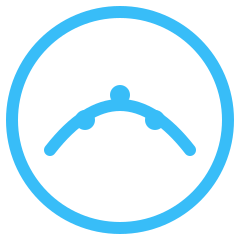
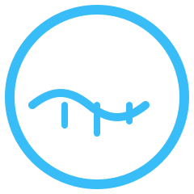
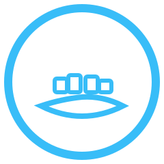

The Insightful Tales Dataset Icon Language
A visual guide to the meanings behind each dataset badge.
dataset icons, visual language, Insightful Tales design system, data storytelling, iconography, nycflights13, Gapminder, Lahman Baseball Database, NOAA Daily Weather, TfL Open Data, UCI Online Retail, FRED Economic Data, NASA MODIS, Global Urban Footprint, Steam Games
The Insightful Tales Dataset Icon Language
Every dataset has a badge. Every badge has a story.
The cyan circles and abstract shapes you see across Insightful Tales aren’t just decoration. They’re a visual language: a way of hinting at what each dataset is and how it behaves, before a single number appears on the page.
✈️ nycflights13 — The Dataset That Took Off
What you see
- A stylized, angular path inside the circle.
- A sense of origin and destination, with a central kink that feels like movement.
What it represents
- The path hints at flight legs and routing.
- The angle suggests direction and schedules — departures and arrivals rather than a static point.
- The circle is the air traffic system around NYC, seen as a whole.
Together, the icon says: this is a dataset of routes, timings, and connections — a structured, navigable map of flights.
🌍 Gapminder — Human Progress in Motion
What you see
- A smooth, rising curve with three circular markers, all inside the circle.
What it represents
- The curve is a stylized development trajectory: GDP per capita, life expectancy, or another long-run indicator.
- The dots are countries or snapshots in time — clustered along the progress curve.
- The circle stands for the world, viewed through comparable indicators.
This icon captures Gapminder as a dataset about global development trajectories — where different places sit along a shared arc of progress.
⚾ Lahman Baseball Database — Baseball’s Digital Memory

What you see
- A parabolic arc across the circle, with three dots near its peak.
What it represents
- The arc is a career or season trajectory — rise, peak, decline.
- The dots are key seasons, players, or eras placed along that arc.
- The circle is the historical record of the game.
The icon echoes what Lahman is best at: long-term, relational baseball history, where every row is part of a bigger narrative arc.
🌦 NOAA Daily Weather — Rhythm of the Days

What you see
- A gently undulating wave across the circle.
- Three short vertical bars rising from the wave.
What it represents
- The wave is daily variation: highs and lows, the breathing rhythm of weather.
- The bars are rain or notable events: a storm spike, a heavy day, an outlier.
- The circle is the broader climate system that these days live within.
This icon signals daily records and weather persistence, ideal for stories about memory in systems and the mood of seasons.
🚇 TfL Open Data — The Network Beneath the City
What you see
- Crisscrossing lines.
- Two solid circular nodes where lines meet.
What it represents
- The lines are routes — Tube lines, rail paths, bus corridors.
- The nodes are interchanges and stations, where flows intersect.
- The circle is the entire transit network as a single organism.
TfL’s data is about movement on a graph — this icon foregrounds routes, intersections, and connectivity.
🛒 UCI Online Retail — Baskets and Transactions
What you see
- A rounded rectangle with horizontal lines (a “mini invoice” or basket).
- An arrow-like element extending outward.
What it represents
- The rectangle is a basket or invoice: one order, many line items.
- The horizontal lines stand in for products in that order.
- The arrow suggests a completed transaction — an event in time.
- The circle frames the marketplace as a system.
This icon marks datasets about customers, orders, and items, where the grain of the data is the transaction.
📈 FRED Economic Data — The Macro Curve
What you see
- A horizontal baseline.
- A rising-and-falling curve with three markers.
What it represents
- The baseline is time — months, quarters, years.
- The curve is a simplified business cycle: expansions and recessions.
- The dots are key readings or indicators: unemployment, inflation, GDP.
- The circle is the macroeconomic landscape.
FRED’s icon is about time-series indicators in motion, not any single statistic.
🛰️ NASA MODIS / Earth Observatory — Earth Seen from Orbit
What you see
- A lower arc.
- A high sweeping curve.
- A small square “pixel” near the top curve.
What it represents
- The lower arc suggests the Earth’s limb.
- The upper curve is a satellite ground track or swath.
- The square is a sensor footprint — one tile of an image.
- The circle frames the Earth-observation domain.
This icon hints at remote sensing and swaths of imagery, where each pixel is a measurement of our planet.
🌆 Global Urban Footprint — Where the World Is Built

What you see
- A gently faceted “ground” shape.
- Several small, blocky rectangles sitting on top of it.
What it represents
- The ground patch is land — a slice of the Earth’s surface.
- The blocks are built-up areas: urban clusters and structures.
- The circle is the global coverage of the dataset.
The icon expresses GUF as a map of where humanity has concretized the landscape.
🎮 Steam Games — Libraries and Play
What you see
- Two overlapping rounded rectangles.
- A circular shape with a small triangle inside it.
What it represents
- The overlapping rectangles are a stack of game tiles — a digital library.
- The circle with a triangle is a play/interaction indicator.
- The circle frame is the ecosystem of games, players, and time.
Steam datasets are about collections, activity, and engagement — not just one title, but the whole library in motion.
🎨 How to Read and Use These Icons
- When you see a small badge next to a dataset name, it’s there to quickly signal the dataset’s “shape” — flights, cities, climate, economics, etc.
- When you see a large badge at the top of a dataset page, it’s a visual “cover” for that particular dataset, echoing the stories it can tell.
- When you see a small badge in a story footer (“Dataset: …”), it helps you connect the narrative you just read with the underlying dataset page, so you can explore further.
Over time, this icon language is meant to feel familiar: even before you read a title, a quick glance at the symbol will tell you what kind of world you’re about to step into — flights, weather, cities, games, baseball, macroeconomics, Earth systems, and more.